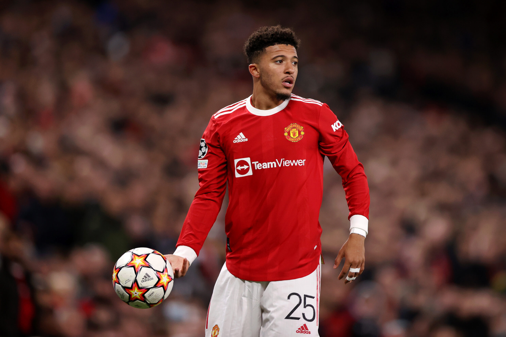

|  | |
| Full Name | Jadon Malik Sancho |
|---|---|
| Date of Birth | 25 March 2000 (age 21) |
| Place of Birth | Camberwell, England |
| Height | 5 ft 11 in (1.80 m) |
| Position | Winger |
| Current Team | Manchester United |
| Number | 25 |
Jadon Malik Sancho (born 25 March 2000) is an English professional footballer who plays as a winger for Premier League club Manchester United and the England national team. He is known for his trickery, game intelligence, pace and use of feints in one-on-one situations.[5] He came runner-up for the 2019 Kopa Trophy and was nominated to the 40-man shortlist for the 2020 Golden Boy. Previously a youth player with Watford and Manchester City, Sancho signed his first senior contract with Borussia Dortmund in 2017. In his second season, he established himself as a first-team regular and was named in the 2018–19 Bundesliga Team of the Season. Ahead of the 2019–20 season, Sancho won his first trophy following the DFL-Supercup victory over Bayern Munich. Sancho was part of the England youth team that won the 2017 FIFA U-17 World Cup and made his debut for the senior team in 2018.
Sancho was born in Camberwell, Greater London[7] to parents from Trinidad and Tobago.He was raised in Kennington.He became friends with fellow aspiring footballer Reiss Nelson, who lived nearby, after they played together in youth tournaments.Growing up, he was a Chelsea fan, and idolised Ronaldinho[. and Frank Lampard.
Sancho signed for German Bundesliga club Borussia Dortmund on 31 August 2017 for a fee reported to be in the region of £8 million and was immediately included in the first-team squad. He later stated that he felt confident in making the move abroad due to his previous experiences in relocating with Watford and Manchester City.Sancho made his debut for the club against Eintracht Frankfurt on 21 October, coming on as a substitute with six minutes left of the match, becoming the first Englishman to play a Bundesliga match for Dortmund.Sancho made his first league start for Dortmund on 14 January 2018, hitting the woodwork in a goalless draw with VfL Wolfsburg.He scored his first professional goal on 21 April. It was the first goal in a 4–0 victory against Bayer Leverkusen in the Bundesliga and he also assisted two other goals in the same match.
On 1 July 2021, it was announced that Manchester United and Dortmund had reached an agreement for Sancho's transfer, subject to him signing a contract and passing a medical, both of which were expected to happen after UEFA Euro 2020. The transfer was completed on 23 July, after Sancho signed a five-year contract with the option of a further year.He was given the number 25 shirt last worn by Odion Ighalo..On 14 August, he made his debut as a substitute for Daniel James in a 5–1 home league win over rivals Leeds United.[48] On 23 November, he scored his first goal for the club, against Villarreal to secure a spot in the knockout stage of the Champions League.Five days later he scored his first Premier League goal against Chelsea after Jorginho miscontrolled a long clearance from Bruno Fernandes, allowing Sancho to take advantage of a two-on-one with Édouard Mendy.
| Borussia Dortmund | England | Individual | ||
|---|---|---|---|---|
| DFB-Pokal: 2020–21 | UEFA European Championship runner-up:2020 | UEFA European Under-17 Championship Golden Player:2017 | ||
| DFL-Supercup: 2019 | UEFA Nations League third place: 2018–19 | UEFA European Under-17 Championship Team of the Tournament: 2017 | ||
| Bundesliga Player of the Month:October 2018, February 2020,February 2021 | ||||
| Bundesliga Team of the Season: 2018–19,2019–20 | ||||
| DFB-Pokal top goalscorer: 2020–21 | ||||